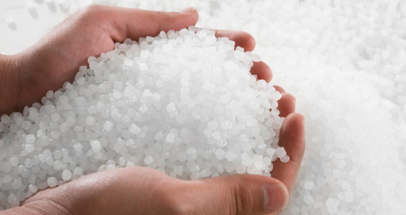

Where do they come from? Where do they go?
Primary Microplastics.
Cosmetics and Personal Care Products.

Microbeads in exfoliating scrubs, toothpaste, and other beauty products.
Industrial Applications.

Tiny plastic pellets used in manufacturing processes, often referred to as nurdles.
Secondary Microplastics
Plastic Waste
Larger plastic products like bottles, bags, and containers break down into smaller fragments over time.
Textiles

Synthetic fibers from clothing, particularly during washing, release microplastics into wastewater.
Road Wear
Tires and road surfaces shed tiny plastic particles due to friction and wear.
Atmospheric Deposits
Microplastics can also be transported through the air, settling onto land and water bodies from atmospheric pollution.
Fishing and Maritime Activities
Equipment like fishing nets and lines can break down into microplastics, contributing to ocean pollution.
Urban Runoff
Rainwater can wash microplastics from urban surfaces into rivers, lakes, and oceans.